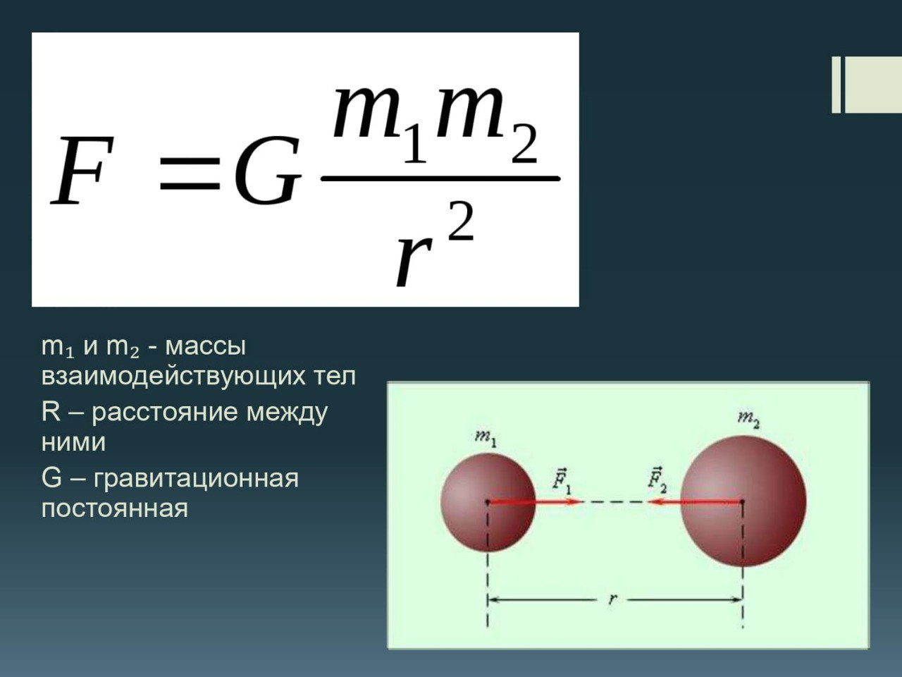
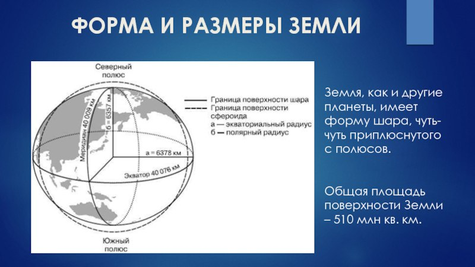
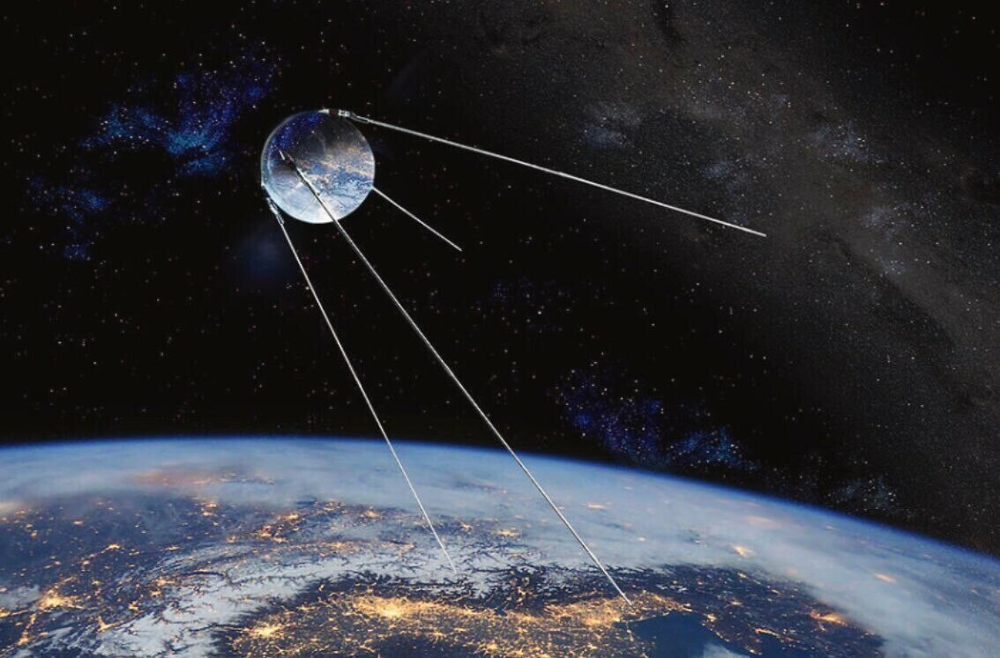

Закон всемирного тяготения
Закон всемирного тяготения: Два тела притягиваются друг к другу с силой, прямо пропорциональной массе каждого из них и обратно пропорциональной квадрату расстояния между ними.

Определение радиуса и массы Землипланет
Как узнать земной радиус и диаметр? Диаметр Земли можно узнать, поделив длину окружности на число π (равное 3,14). Радиус Земли можно узнать, поделив диаметр на 2. Почему у Земли две разные величины окружности. Это потому, что она не является геометрически правильным шаром. На ее форму влияет гравитация. Масса притягивается к центру, поэтому планет сжимается.

Размеры и форма Земли
Земля, также классифицируется как самая большая из планет земной группы по окружности и диаметру. Экваториальная окружность Земли составляет 40 075,16 км. Она немного меньше между Северным и Южным полюсами – 40 008 км. Диаметр Земли у полюсов составляет 12 713,5 км, а на экваторе – 12 756,1 км. Земля имеет форму эллипса!

Движение искусственных спутников Земли
Запуск первого искусственного спутника Земли, ставшего первым искусственным небесным телом, созданным человеком, был осуществлён в Советском Союзе 4 октября 1957 г. Высоты полёта искусственных спутников над Землёй различны — от 200-300 км до нескольких десятков тысяч километров. Искусственные спутники выводятся на орбиты с помощью управляемых многоступенчатых ракет-носителей, которые от старта до некоторой расчётной точки в пространстве движутся благодаря тяге, развиваемой реактивными двигателями.
